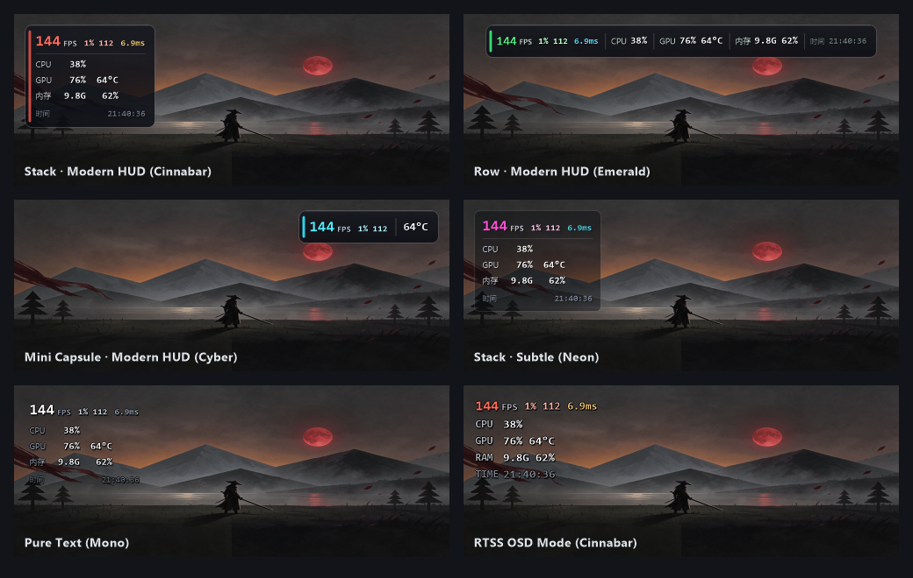
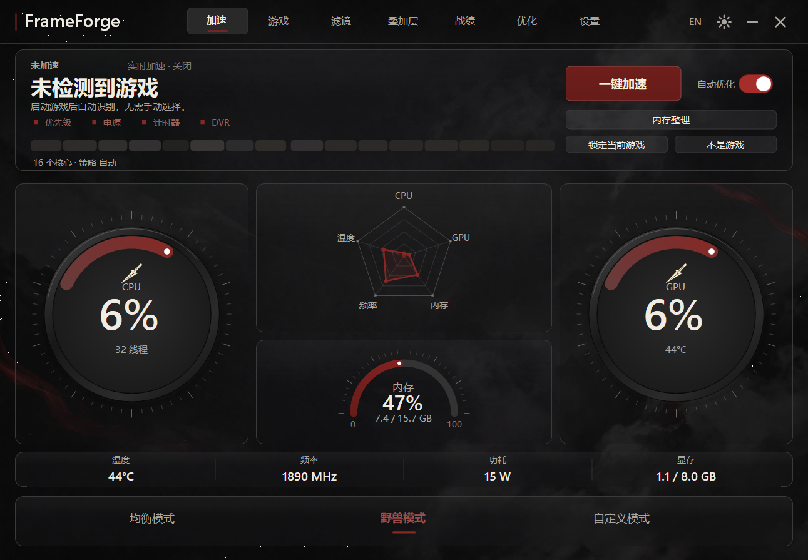

MIT OPEN SOURCE · WINDOWS 10 / 11 (x64) · ~7 MB PORTABLE
轻量级 Windows FPS 游戏增效工具
一键可回滚系统加速、PresentMon / RTSS 现代毛玻璃 HUD 叠加层、非侵入式硬件画面滤镜与赛后帧率战绩。单文件免安装，默认零 DLL 注入，反作弊友好。

为什么它更克制，也更可靠
去掉广告、常驻驱动与强制注入，把游戏优化与性能监控收敛为一个 7 MB 开源单文件。
单文件 · 约 7 MB
纯 C# 与原生 GDI+ 实现，直接由系统自带 csc.exe 编译。免安装、无后台服务残留、零遥测零广告。
默认零 DLL 注入
通过 Intel PresentMon ETW 采集帧率与 1% Low，默认采用分层窗口绘制叠加层；独占全屏可无缝切换至 RTSS。
100% 原子级回滚
基于带 HMAC 签名的 SCTL v2 事务预写日志与看门狗，即使游戏崩溃或强杀，也会自动还原电源、计时器与核心调度。
硬件滤镜与 ICC 校色
23 套通用及游戏专用预设、六维微调、DDC/CI 硬件背光控制，并支持导入显示器 .icc / .icm 校色文件。
v1.6.5 现代 HUD 与水墨双主题界面
五套统一配色主题（朱砂、翠绿、粉紫、青蓝、极简）与三档底板模式，自绘叠加层、RTSS 与设置预览保持一致。



与传统游戏优化/监控组合的对比
面向注重干净系统环境、反作弊兼容性与可控回滚的 FPS 玩家。
| 对比维度 | FrameForge | 传统优化 / 监控组合 |
|---|---|---|
| 体积与部署 | 单文件约 7 MB，绿色便携，无常驻驱动 | 数十至数百 MB，需安装多套服务与驱动 |
| 反作弊兼容性 | 默认零 DLL 注入（ETW 采集），反作弊进程白名单保护 | 普遍依赖渲染钩子注入，易与部分反作弊冲突 |
| 系统改动安全 | SCTL v2 事务日志 + 独立看门狗，崩溃后自动对账还原 | 缺少事务记录，异常退出后常遗留系统改动 |
| 隐私与源码 | MIT 全量开源，支持本机一键自编译，零遥测 | 闭源、广告弹窗或强制登录账号 |
获取与源码自编译
所有发布件均附带 SHA-256 校验值；你也可以无需安装 Visual Studio，直接用 Windows 自带编译器从源码构建。
# Build from source on Windows 10 / 11 (in-box .NET Framework 4.8 csc.exe)
git clone https://github.com/caijun-1/frameforge.git
cd frameforge
powershell -ExecutionPolicy Bypass -File .\build.ps1
# v1.6.5 FrameForge.exe SHA-256
43da958dfb965f4659b3f027fd6d9f8495ec5fb02b8407d95edb1cb68daaf99a